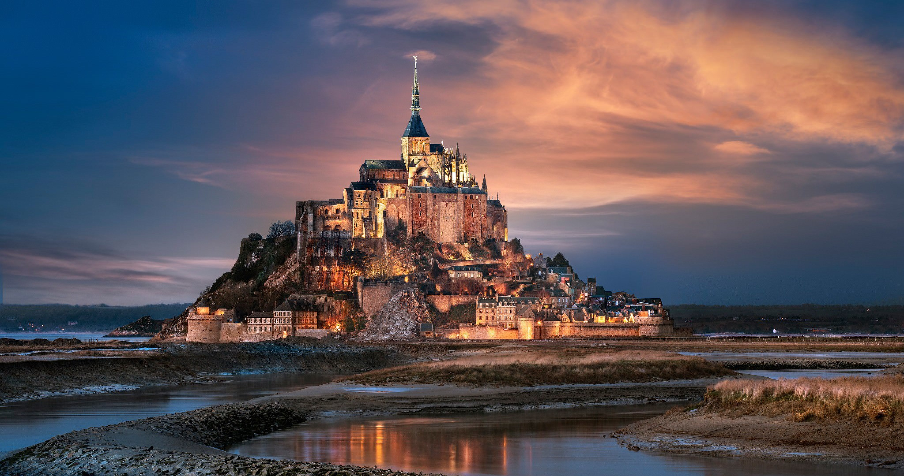
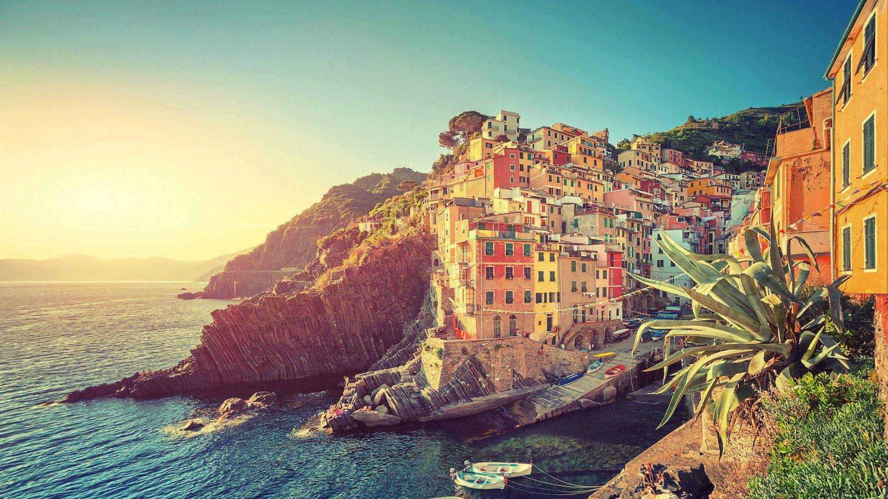
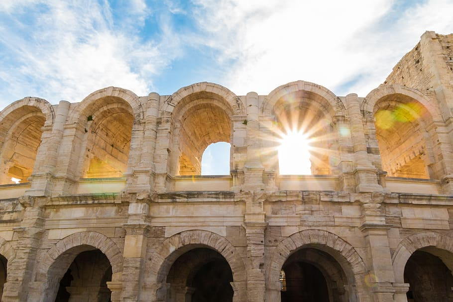

1.PARIS– The City of LOVE
(Where to stay..)
Tourists across the world visit France just to witness the city of Paris city of love. This city beholds many great monuments such as Eiffel Tower and also known for its rich culture and famous museum The Louvre also bustling river bank and vibrant people pull tourists from all over the world and have made Paris one of the immensely famous places in France.
Best time to visit: April to July
How to reach :
By air: Charles de Gaulle International Airport is located 23 km from central Paris. Paris Orly Airport is located just 13 km south of Paris. Beauvais–Tillé Airport is the furthest airport and is located 85 km north-northwest of the city.
By rail: Paris enjoys excellent railway connectivity to all other parts of France and the rest of Europe. No single junction exists for all trains; however, there are six different railway stations, which are not connected to each other but run trains to and from various other cities and European countries. Some of the important trains in Paris include the Train Express Régionale, Trains à Grande Vitesse, the high-speed Thalys, and the Eurostar and Intercity trains.
By road: Paris enjoys good bus service, both within the city and to and from other cities in France. Eurolines is one of the major bus operators in Paris. There is also Megabus, a budget travel bus operator, which connects Paris with Brussels, United Kingdom and Amsterdam.
Paris is linked to all important cities of France by excellently built expressways (also called autoroutes). Traffic is dense, and it is best to travel by public transport. If you do wish to travel by car, it is advisable to hire a taxi.
Attractions: Eiffel Tower, The Louvre, Notre Dam Cathedral, Palace of Versailles, Arc de Triomphe, Montmartre also the boat riding.
Average Temperature: 11 to 22 degree celsius
2.BORDEAUX – There is so much to discover
(Where to stay..)
Bordeaux in France at its charming best during a stunning sunset. A 5 and half hours drive from Paris, this picturesque city of Bordeaux is a perfect to unwind and rejuvenate. Famed as a wine growing region, Bordeaux is one of the lively cities and among the important places to visit in France. Half of this port city is declared as one of the largest World Heritage Sites by UNESCO.Known for its amazing museums, churches, cathedrals, and vintage mansions, Bordeaux attracts numerous tourists and students every year.
Best time to visit: May to November
How to reach :
By air: Bordeaux-Merignac Airport- Serves mostly domestic flights, but also linked to Paris, Amsterdam, London and Madrid. An express bus (EUR 7) will take you from the airport to the city centre. A public bus availed from the right of the Arrivals exit will charge you EUR 1.40 to take you to Gambetta.
By rail: Gare Saint Jean -Is 4km away from the city centre. Trains regularly go to Paris, Toulouse, Masrseille, Nice. There are trams (line C), taxis and buses to grab right outside the station.
By road: A10 and N10(north) and A63(south) are the major highways leading into the city.
Attractions: Cathédrale Saint-André, Le Grand Théâtre, Place de la Bourse, Basilique Saint-Michel, and Basilique Saint-Seurin.
Average Temperature: 8 degree celsius (Min.) and 27 degree celsius (Max.)
3.Mont Saint-Michel – Where the Harry Potter was filmed
(Where to stay..)
The beautiful island commune of Mont Saint-Michel is one of the most popular tourist places in France. Located in Normandy France, Mont Saint-Michel is a beautiful island commune and one of the most popular tourist places in France. Snuggled at the mouth of Couesnon River, it offers breath-taking scenic views to tourists and travelers. Enclosed by natural fortification, this island houses an age-old monastery, from where its name has been derived.
Best time to visit: May to October
How to reach :
By air: The Rennes Airport, located 75 km from Mont Saint-Michel, is the closest airport. It has 15 direct lines servicing larger French cities like Paris, Marseille, Bordeaux, or Lille.
By rail: The station Gare de Pontorson is the closest to Mont Saint-Michel.The simplest way to get to Mont Saint-Michel from Paris is to take a direct train to Rennes. From there, you can then take a direct shuttle coach bus to Mont Saint Michel. The closest train station from other directions is Pontorson.
By road: There are many shuttle bus running to and from near by locations , so you can reach easily your destination and enjoy the place.
Attractions:
The Abbey, Tidal Island, Eglise Saint Pierre, The Parish Church and Museums of History, and Maritime and Ecology
Average Temperature: 7 degree celsius to 27 degree celsius
4.FRENCH RIVIERA – Where the water is more bluer than sky.
(Where to stay..)
Situated on the Mediterranean Coast of France, French Riviera is one of the famous tourist places in France. It is known for charming scenic beauty, mesmerising shoreline, vacation retreats and health resorts.This glamorous French destination is a popular name in the world tourism map and is best known for Cannes Film Festival, quaint perched villages, amazing perfumeries, glass blowers, and potters.
Best time to visit: June to September
How to reach :
By air: The Aéroport Nice Côte d’Azur is the main hub for the French Riviera and the second busiest international airport in the country after Paris. Delta is the only airline to offer direct flights from the US to Nice, with daily service from New York (JFK).
By rail: The rail system links the French Riviera to other destinations throughout France, as well as major European cities. From Paris, it’s about a five-and-a-half-hour ride to Nice on the high-speed TGV train.
By road: The A8 motorway, or “La Provençale,” connects Nice to Aix-en-Provence in the west and the Italian border in the east. The 950 km (or 590 mile) drive from Paris to Nice takes about eight hours.
Attractions:Eze, Grasse, Monaco, Menton, La Colline du Chateau and the city of Cannes where the famous film festival is held.
Average Temperature: 7 to 28 degree celsius
5.ARLES – Let yourself in.
(Where to stay..)
One of the must see places to visit in France, Arles is now counted as a World Heritage Site by UNESCO. It is a vintage city perched on a hillock where River Rhône bifurcates to meet the sea. This ancient city has an awesome cityscape that comprises vibrant sun baked houses, lanes, and roads.Dotted with shops and restaurants, the city reflects old world charm in every sense. Also, the ancient city of Arles had been an inspiration for eminent painter Vincent van Gogh and many of his famous works are about the town.
Best time to visit: June to September
How to reach :
By air: The closest airport is Aéroport Marseille Provence, which has frequent connections to many cities in Europe. From there, it is a 50 minute drive to Arles. Alternatively, you can take a shuttle bus to Vitrolles train station, and take the train from there (approx. 45 minutes).
By rail: Arles has direct train connections to the TGV stations in Marseille, Avignon and Aix-en-Provence. Consult the website of SNCF for schedules and tickets. From the railway station, it is a 10 minute walk to the centre of town.
By road: Arles is not directly served by a motorway (autoroute), but it's very easy to reach from both Salon-de-Provence and Nîmes (approx. 35 minutes from both directions). Getting there from Avignon involves taking a slower provincial road, but shouldn't take longer than 45 minutes.Several bus lines serve the Bouches-du-Rhône department and surrounding area, departing from the railway station. Tickets can be bought on the bus.
Attractions: Arles Amphitheatre, Alyscamps, Montmajour Abbey, Church of St. Trophime, Cloître Saint-Trophime, Musée Départemental de l’Arles Antique, and Fondation Vincent van Gogh
Average Temperature: 7 to 31 degree celsius.